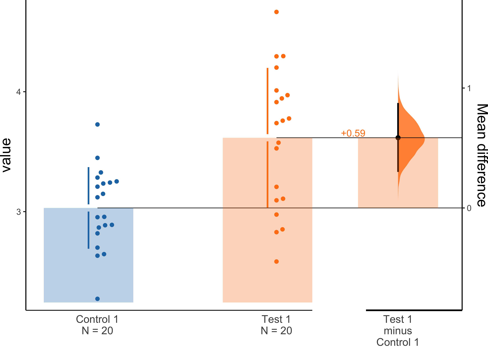

dabestr is a package for Data Analysis using Bootstrap-Coupled ESTimation.
Estimation statistics is a simple framework that avoids the pitfalls of significance testing. It uses familiar statistical concepts: means, mean differences, and error bars. More importantly, it focuses on the effect size of one’s experiment/intervention, as opposed to a false dichotomy engendered by P values.
An estimation plot has two key features.
It presents all datapoints as a swarmplot, which orders each point to display the underlying distribution.
It presents the effect size as a bootstrap 95% confidence interval on a separate but aligned axes.
The dabestr package powers estimationstats.com, allowing everyone access to high-quality estimation plots.
Installation
# Install it from CRAN
install.packages("dabestr")
# Or the development version from GitHub:
# install.packages("devtools")
devtools::install_github(repo = "ACCLAB/dabestr", ref = "dev")Usage
data("non_proportional_data")
dabest_obj.mean_diff <- load(
data = non_proportional_data,
x = Group,
y = Measurement,
idx = c("Control 1", "Test 1")
) %>%
mean_diff()
dabest_plot(dabest_obj.mean_diff, TRUE)
Please refer to the official tutorial for more useful code snippets.
Citation
Moving beyond P values: Everyday data analysis with estimation plots
Joses Ho, Tayfun Tumkaya, Sameer Aryal, Hyungwon Choi, Adam Claridge-Chang
Nature Methods 2019, 1548-7105. 10.1038/s41592-019-0470-3
Contributing
Please report any bugs on the Github issue tracker.
All contributions are welcome; please read the Guidelines for contributing first.
We also have a Code of Conduct to foster an inclusive and productive space.
Acknowledgements
We would like to thank alpha testers from the Claridge-Chang lab: Sangyu Xu, Xianyuan Zhang, Farhan Mohammad, Jurga Mituzaitė, and Stanislav Ott.
DABEST in other languages
DABEST is also available in Python (DABEST-python) and Matlab (DABEST-Matlab).